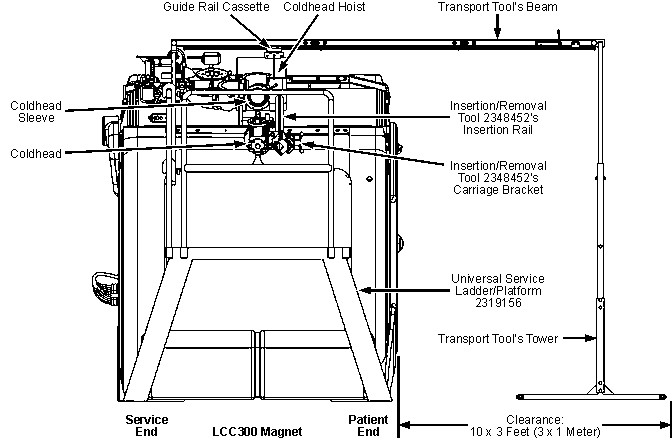

Operating Documentation
Direction 5500113, Rev# 3
Module Version 3.0, Version Date 9/1/10
Operating Documentation |
| ||||
| Potential Fatal Injury! | ||||
| before and while performing this Coldhead replacement procedure: | ||||
|
| ||||
| Potential Fatal Injury! | ||||
| before starting this Coldhead replacement procedure: | ||||
| Have all Work Assistants or Observers comply with the Buddy System Requirements & Certification subsection of “MR Magnet - Safety Requirements.” |
| ||||
| Potential Injury Hazard! | ||||
| Do not perform: | ||||
| this Coldhead Replacement procedure without the assistance of a qualified/certified Work Assistant. |
| ||||
| Personal injury and equipment damage | ||||
| Strong Magnetic Field | ||||
| When servicing any magnetic equipment, it is critically
important that the service engineer consciously plan the path to be
taken when moving highly ferrous devices in the magnet environment.
The path should be as far from the magnet as practical and avoid high
flux-density fields. Safety Requirements
When planning a service path, it is critical that the path be clear and sufficiently wide. Ensure that there are no trip hazards, obstacles, clutter, slippery surfaces or other items even partially restricting the path. If there are portable obstacles in a path, remove them from the area and replace them after the service action is completed. It is required to walk the path prior to beginning service to ensure that there is sufficient space through which to pass for yourself and the object being serviced. |
| ||||
| Potential injury Hazard! | ||||
| Injuries can result from Failure to use the Coldhead Insertion/Extraction Tool and/or from not having that tool securely installed before removing the Coldhead. | ||||
| Only replace Coldheads using the Coldhead Insertion/Extraction Tool. |
| ||||
| Potential Projectile Hazard! | ||||
| Ferromagnetic objects in a strong magnetic field can become dangerous projectiles. | ||||
|
| ||||
| Potential Projectile Hazard! | ||||
| The ferromagnetic materials in a Coldhead will be strongly attracted to the magnet's field within 18 in. (500 mm) of the magnet. | ||||
Do not allow Coldhead within 18 in. (500 mm) of the magnet
unless its secured to the Coldhead Hoist or safely on the Insertion
Rail. When moving Coldhead to/from magnet:
|
| ||||
| Potential Projectile Hazard! | ||||
| Stainless steel service Fixtures/tools have a slight magnetic attraction in a 3 tesla field. They can become projectiles if not handled carefully/securely within 18 in. (500 mm) of the magnet. | ||||
| Always maintain control of stainless steel service Fixtures/tools within 18 in. (500 mm) of the magnet. |
| ||||
| High Magnetic Field! | ||||
| Be prepared for emergencies. | ||||
| Make sure the MRU is installed and operational to enable the magnetic field to be quickly discharged in case of an emergency. See Magnet Rundown Unit (MRU) Installation. |
| ||||
| Potential Cold Burn Hazard! | ||||
| Exposure to Cryogens and contact with cold objects is possible during Coldhead Replacement. | ||||
| Wear protective clothing, nonabsorbent gloves and goggles when performing this Coldhead replacement procedure. |
| ||||
| Electrical Shock Hazard! | ||||
| Contact with connectors leading to an energized Compressor can cause electrical shock. | ||||
| Disconnect the power cable and follow OSHA Lockout/Tagout (LOTO) procedures to make sure power is not supplied to the Compressor while performing this Coldhead replacement procedure. |
| ||||
| Monitor cryostat pressure throughout the Coldhead replacement procedure. If magnet pressure is above 4 psig, vent the magnet down to 4 psig through Vent Valve V2 (Illustration 1). Pressure may require venting multiple times to prevent cold helium gas from cooling the shield and first stage heat station in the Coldhead Sleeve during Coldhead replacement. Cold helium exhaust flows through the shield exhaust plumbing, cooling the shield and first-stage heat station. | ||||
| Condition | Reference | Effectivity |
|---|---|---|
Make sure the area is secure and that ALL required Warning Signs are posted to meet the safety requirements stated in the following document before starting this Coldhead Replacement procedure. | - | |
Removal of some magnet enclosure components may be required to complete this Coldhead Replacement procedure. Refer to the appropriate document listed and the Service Methods documentation (available through the Common Documentation Library at gehealthcare.com or your local GE Healthcare Service Representative) before continuing if cover removal is required. | - | |
(continued) | - |
Either turn Magnet Monitor power off, or disable the Magnet Monitor's Master Alarm and Vessel Pressure Control. This will prevent false alarms and long-term heater operation.
Set up the HDx Service Platform in conformance with HDx Service Platform 5155291 Set-Up. Position the platform approximately centered between the magnet's patient and service end flanges.
If magnet pressure is >4 psig, vent the magnet down through Vent Valve V2 to 4 psig. Monitor pressure throughout the Coldhead replacement procedure, and vent through V2 as required to keep cryostat pressure at 4 psig.
| ||||
| Make sure gas lines are removed immediately after power is disconnected to prevent contamination of gas lines and Compressor. | ||||
Immediately upon site arrival, shut down the compressor as follows to prevent pressure build-up in the Coldhead:
Turn on (upward I position) the Coldhead Drive Switch on the Compressor's back panel.
Place the Drive Switch on the Compressor's front panel in the off (downward O) position.
Run the Coldhead for only 10 seconds with the Compressor turned off to prevent pressure build-up in the Coldhead, then turn Off the Coldhead Drive Switch and the Compressor's Main Power Switch.
| ||||
| Electrical Shock Hazard! | ||||
| Contact with connectors leading to an energized Compressor can cause electrical shock. | ||||
| Whenever the input power to the Compressor is disconnected, follow loto procedures to make sure power is not supplied to the Compressor. |
Disconnect and LOTO input power to the Compressor. Verify that no voltage is present by using a DVM or equivalent measuring device.
| ||||
| Do not put any bending force on Aeroquip fittings while connecting/disconnecting helium flexlines. A bending force will create difficulty in the rapid engagement/disengagement required to prevent helium loss and system contamination. Support the gas lines when connecting/disconnecting to the Coldhead at the top of the magnet or to the Compressor. | ||||
Once Coldhead power is disconnected, immediately:
Disconnect the Coldhead power cable at the Coldhead.
Disconnect the helium gas lines from the right-angle flexline connectors at the Coldhead in conformance with Helium Flexline Connections and Replacement. (See the illustration above.)
Remove enclosures required for Coldhead access in conformance with Upper and Side Enclosure Removal or Introduction to HDe & HDx Enclosures as appropriate.
| ||||
| Potential Projectile Hazard! | ||||
| The Coldhead Motor Shield is made of ferromagnetic material and has a large attractive force to the magnet. | ||||
| Do not loosen or remove the motor shield mounting screws under any circumstance! |
| ||||
| Potential Crush Hazard! | ||||
| Because the ferromagnetic Coldhead motor shield is attracted to the magnet, the motor shield can pinch/crush fingers trapped between it and the magnet. | ||||
| Wear leather gloves and use extreme caution when pivoting the Motor Shield's outer half to expose the Coldhead. Do not put fingers or hands between the Motor Shield's two halves. |
Open and secure the Coldhead motor shield.
Disengage the M8 x 16 Cap Screw securing the motor shield closed, but do not loosen the screw.
Using a nonmagnetic wrench, turn the M12 x 100 Jack Screw (shown in the previous illustration) to open the motor shield's hinged section approximately 1 in. (25 mm).
Secure the motor shield in its open position using the M8 x 16 Motor Shield Pin.
Retract the M12 Jack Screw to leave approximately 0.5 in. (12 mm) exposed as shown above.
Clean all vacuum fittings on the apparatus shown below, then lightly coat O-rings with vacuum grease to make sure vacuum seals are tight.
Attach the Seal-Off Operator to the Pump-Out Port on the Coldhead Sleeve. (Refer to the previous illustration.) Tighten the seal-off operator to the pump-out port by holding the body of the operator and tightening the nut with a wrench.
Connect the Service Adapter (2287707) to the seal-off operator.
| ||||
| Fatal Explosive Hazard! | ||||
| Gas cylinder rupture/damage or opening cylinder valve fast will release 2400 psi gas from cylinder. | ||||
| Make sure gas cylinders are secure from falls (by securing to a wall or to a nonmagnetic gas cylinder cart) and away from moving objects before using. Always open cylinder valve slowly. |
If a nitrogen gas cylinder is available:
Secure a nitrogen cylinder to a nonmagnetic gas cylinder cart.
Remove the cylinder cap.
Connect the gas regulator to the nitrogen gas cylinder.
Connect the Nitrogen Gas Line (2303724) from the gas regulator to the Service Adapter's gas inlet valve (green handle). See the two illustrations below.
Make sure the regulator handle is backed out counterclockwise (CCW) to avoid regulator damage, then open the gas cylinder slowly. The high pressure gauge should indicate 2100 to 2400 psig if the cylinder is full.
Open the gas inlet valve and set a low pressure gas flow (1 psig), as indicated on the regulator gauge.
Continue with Step 13.
If a nitrogen gas cylinder is NOT available:
Connect Helium Vent Hose (5111361) to the Shim Lead's Nupro Valve.
Connect the Helium Vent Hose's quick connect fitting to the Service Adapter's gas inlet valve (green handle). See the previous illustration.
Open the Nupro Valve.
Open the vacuum port valve (black handle) on the adapter and allow gas to flow out for 30 seconds to purge the assembly of air.
Close the vacuum port and gas inlet valves.
Make sure the black and green handles on the Service Adapter are closed. Connect the vacuum pump apparatus as shown below. Apply a light coat of vacuum grease to the centering O-rings.
Turn on the vacuum pump, open the vacuum valve (black handle) on the Service Adapter and allow the pump to evacuate the vacuum line and Service Adapter to <20 millitorr (<20 microns), as read on the Digital Vacuum Meter. Close the vacuum valve.
Repeat opening and closing the vacuum valve (black handle) two more times while pumping.
When 50 millitorr (50 microns) is reached, close the vacuum valve (black handle). Observe the vacuum meter to make sure the Service Adapter and Seal-Off Operator are leak tight. If the gauge rises >200 millitorr (>200 microns) over 30 seconds, suspect a leak and:
Turn off the vacuum pump and temporarily open the green handle to bring the apparatus to atmospheric pressure.
Remove the vacuum line and reassemble the Seal-Off Operator and Service Adapter.
When the apparatus is leak tight, open the vacuum valve (black handle), and make sure the vacuum is ≤50 millitorr (≤50 microns) before continuing with the next step.
Push in and rotate the black handle of the Seal-Off Operator CW to engage the plug in the Pump-Out Port. When the handle is engaged, pull the handle out to open the Pump-Out Port.
Immediately check the vacuum on the digital vacuum meter for a reading of ≤50 millitorr (≤50 microns). A reading of >>100 millitorr (>>100 microns) indicates a poor vacuum in the sleeve that may cause cooling problems. If this condition occurs:
Pump out the sleeve again to achieve a vacuum <100 millitorr (<100 microns).
Operate the Coldhead to establish final temperature.
Loosen and remove the eight Coldhead mounting bolts and Belleville Washers.
Rethread two bolts without Belleville washers 3 to 4 threads deep into holes 180° apart.
Close the vacuum valve (black handle). Open the gas inlet valve (green handle), and fill the vacuum space in the sleeve with nitrogen gas at a small positive pressure (1 to 3 psig on the low-pressure regulator) to break the Coldhead away from the first and second stage contacts.
If required to dislodge the Coldhead, carefully insert a large nonferromagnetic screwdriver or other similar wedge-shaped, nonferromagnetic tool into the gap between the sleeve flange and transition flange.
Gradually pry the transition flange away from the sleeve flange by tapping the end of a screwdriver or wedge while moving it around the circumference of the gap, or
Use two nonferromagnetic M10 bolts as a jack screw to apply a separating force between the Coldhead sleeve flange and the transition flange.
| ||||
| Potential Cold Burn Hazard! | ||||
| Unprotected skin will be severely damaged if it contacts a removed Coldhead's first or second stage stations. | ||||
| Wear insulated leather gloves and protective clothing (long-sleeve shirt, etc.) when removing a Coldhead. Do not touch the first or second stage stations of a removed Coldhead. |
| ||||
| Potential Impact Hazard! | ||||
| Gas pressure during Coldhead removal may cause the Coldhead to pop out, potentially causing injury upon impact. | ||||
| Keep away from the end of a Coldhead during Coldhead removal. |
| ||||
| Make sure nitrogen gas is flowing through the pump-out port connection and that the Coldsleeve Heater, the separate cover plate and the Coldhead Insertion/Removal Tool are within reach before proceeding. | ||||
When the Coldhead breaks away from the first and second stage contacts, remove the remaining two bolts and partially extract the Coldhead until the Transition Flange O-Ring is exposed.
Assemble the LCC300 Coldhead Transport Tool in conformance with the section that follows if not already assembled, then extract the Coldhead from the sleeve in conformance with Coldhead Extraction, Coldhead Extraction.
Assembly of the LCC300 Coldhead Transport Tool requires two people. Practice assembling the tool at least once before arriving on site. Make any necessary adjustments, including those recommended by the Guide Rail Cassette manufacturer at that time.
Preassemble the Transport Tool's Tower and its Beam sections ( Step 4 through Step 8) outside the Magnet Room if space permits. If not, assemble them as far away from the magnet as possible.
Illustration 13 shows the fully assembled Transport Tool beside the magnet.
Illustration 13: Assembled Transport Tool 2375543 Beside Magnet

| ||||
| Do NOT attempt removing or installing a Coldhead on a 3 Tesla magnet without using LCC300 Coldhead Transport Tool 2375543. | ||||
Examine the Transport Tool's braided nylon rope and No. 36 nylon twine cord and replace if necessary. The Transport Tool uses two pieces of 0.25 in. (6 mm) diameter braided nylon rope cut at ~15 ft. (4,600 mm) length and one piece of No. 36 nylon twine release cord cut at ~8 ft. (2,400 mm) length.
Examine the Hoist's rope and order a replacement if necessary.
Clear an area at least 10 ft. (3 m) long and 3 ft. (1 m) wide in front of the Service Ladder/Platform. (See the next illustration.)
Attach the Transport Tool's legs to the Tower Base. Always use the two Magnet Side legs.
Attach the Tower Channels to the Tower Base using four 0.5-13 UNC x 2 in. hex bolts. (See the previous illustration.)
Attach the Middle Tower to the Tower Channels, two 0.5-13 UNC x 2.5 in. hex bolts per channel.
| ||||
| Skip the next step only if BOTH service personnel are sufficiently tall enough to pin the Transport Tool's Beam to the Tower while the Tower is fully raised. Beam pinning can be further lowered by sliding the Middle Tower into the Tower Channels. | ||||
Slide the Upper Tower Frame into the Middle Tower as far as possible. (The Upper Tower Frame will be raised after the Transport Tool's Beam is pinned to the Tower inside the Magnet Room.)
| ||||
| Potential Projectile Hazard! | ||||
| The LCC300 Coldhead Transport Tool's beam is slightly ferromagnetic. injury can result if not handled carefully/securely within 18 inches (500 mm) of the magnet. | ||||
| Do not assemble the beam within 18 inches (500 mm) of the magnet. handle the beam carefully/securely within 18 inches (500 mm) of the magnet. |
Assemble the Transport Tool's Beam using .5-13 UNC x 2 in. hex bolts and M6 x 30 socket-head cap screws as in the two illustrations that follow.
Move the Guide Rail Cassette along one piece of the Guide Rail. If cassette movement is loose, tight, or uneven adjust the cassette as follows (from vendor source):
Lay the Guide Rail on a flat surface with the datum line facing away from you. Anchor the rail to keep it from slipping when sliding resistance is applied to the cassette.
Set the roller cassette on the rail with the adjustment screw facing towards you, while the datum line on the rail is away from you. Do not install the wipers on the cassette yet.
Make sure the four bolts on top of the adjustable side of the cassette are slightly loose and the bolts on top of the fixed side are tight before adjusting the drag screw. Do not try adjusting the cassette with the top plates bolted tight.
While sliding the cassette along the rail adjust the drag adjustment set screw inwards for more drag or outwards for less. Feel for an even amount of resistance as the drag screw is turned in and out. See Illustration 19.
Tighten the top plate bolts to 44.3 pound-feet (60.1 Newton-meters). Do not over tighten.
Move the cassette along the rail again. It should move evenly. If there is either of the following conditions, repeat Step 9.c - Step 9.e to tune sliding resistance.
If the cassette has never been used before install a clip-on plastic wipers at each end of the cassette.
Run the Guide Rail Cassette along the full Guide Rail length. If the Guide Rail Cassette does not smoothly move from one section of rail to the next, tighten the bolts connecting rail sections.
Verify that a ~15 feet (46,00 mm) length of .25 inch (6 mm) dia. braided nylon rope is attached to each end of the Guide Rail Cassette. See Illustration 20.
Verify that a ~ 8 feet (2400 mm) length of #36 twine release cord is attached to the End-of-Rail Latch screw. See Illustration 20.
Coil and securely bundle the each length of rope and the length of twine.
Run the Guide Rail Cassette along the Guide Rail until it latches in the End-of-Rail Latch. See Illustration 21.
Tie the rope and twine coils to the Release Cord Eyebolt to keep loose rope/twine off the floor during Step 16.
Carefully carry the Transport Tool's Magnet End Support Frame to the Service Ladder/Platform inside the magnet room. Avoid taking the frame close to the magnet's bore since the magnetic field will have a substantial “eddy current” effect on the frame.
Lift the Magnet End Support Frame and place its hooks over the Service Ladder/Platform's end safety rail. See Illustration 22.
Secure the Magnet End Support Frame to the Service Ladder/Platform's end safety rail using four 3/8-16UNC x 3.5 inch knurled thumb screws. See Illustration 22.
| ||||
| Always have assistance when moving the Transport Tool's Tower. | ||||
Carefully carry the Transport Tool's Tower into the magnet room. Place the Tower to the left of the magnet's patient end with the tower's vertical components 4.5 feet (1370 mm) in front of the Service Ladder/Platform. Orient the Tower with the tabs to attach the Beam facing the magnet.
| ||||
| Potential Projectile Hazard | ||||
| The LCC300 Coldhead Transport Tool's beam is slightly ferromagnetic. injury can result if not handled carefully/securely within 18 inches (500 mm) of the magnet. | ||||
| Do not assemble the beam within 18 inches (500 mm) of the magnet. handle the beam carefully/securely within 18 inches (500 mm) of the magnet. |
| ||||
| Always have assistance when moving the Transport Tool's Beam. | ||||
Carefully carry the assembled Beam into the room and rest the Beam's magnet end on the Service Ladder/Platform away from the magnet. Orient the Beam with the End-of-Rail Latch towards the Tower.
| ||||
| Always have assistance when pinning the Transport Tool's Beam in place. | ||||
Pin the Beam in place:
Pin the Beam's tower end between the tabs on top of the Upper Tower Support Frame using its 5/16-18UNC x 2.88 inch knurled thumb screw. See Illustration 23.
Pin the Beam's magnet end between the tabs on top of the Magnet End Support Frame using its 5/16-18UNC x 2.88 inch knurled thumb screw. See Illustration 23.
Untie each length of rope and twine from the Release Cord Eyebolt and then uncoil each length of rope/twine.
Thread the .25 inch (6 mm) dia. braided nylon rope facing the Tower through the rope guide on the Upper Tower Frame and the other length through the rope guide on the Magnet End Support Frame. See Illustration 24.
Drape the #36 twine release cord's loose end over the top of the Upper Tower Frame. See Illustration 24.
| ||||
| Always have assistance when raising the Transport Tool's Tower to full height. | ||||
Raise the Upper Tower Frame to the position shown in Illustration 15 and securely fasten using .5-13UNC x 2 inch hex bolts. See Illustration 25. Adjust the Tower Base's location as required to keep the Tower vertical.
Slide the Insertion/Removal Tool's carriage bracket onto and along the insertion rail until the hole in the insertion rail's end reappears. See Illustration 26. Insert the rail stop through the hole. Position the carriage bracket against the rail stop and then tighten the carriage bracket's wing nut and locking knob.
Carry the insertion rail and carriage bracket along the wall and to the Service Ladder/Platform.
Position the Coldhead hoist even with the Coldhead, using the hoist carriage's .25 inch (6 mm) dia. braided nylon rope (installed to the two ends of the rail guide in LCC300 Coldhead Transport Tool 2375543 Assembly, Step 23) to move the hoist carriage along the Transport Tool's beam.
Raise/lower the hoist's rope until the hoist's carabiner can reach the insertion rail's rail stop hole.
With the carriage bracket locked to the insertion rail, remove the rail stop and quickly attach the hoist's carabiner to the rail stop hole. This allows the hoist to carry some of the weight and to help stabilize the insertion rail and carriage bracket in the following steps.
| ||||
| Do not slide the Coldhead out too far in Step 6. Maintain contact between the Coldhead transition flange and the Sleeve cavity to prevent the Coldhead first stage from dropping onto the Sleeve. | ||||
Slide the Coldhead out 5/16 inches - 3/8 inches (8 mm - 10 mm) from the Sleeve to allow assembly of the LCC300's Coldhead Insertion/Removal Tool's sleeve clamp onto the sleeve flange.
Slide the carriage bracket along the insertion rail all the way to the sleeve clamp end.
Position the insertion rail's sleeve clamp straddling the Sleeve flange and aligned with the holes in the flange's right side. Insert the clamping bolts and firmly tighten. See Illustration 26 and Illustration 27.
Bring the Insertion/Removal Tool's carriage bracket in contact with the Coldhead flange. Tightly fasten the carriage bracket to the Coldhead transition flange's two threaded holes using the bracket's bolts. See Illustration 27.
When the insertion rail is firmly attached to the Coldhead flange and the carriage bracket is attached to the Coldhead, unhook the hoist's carabiner from the rail stop hole and reinsert the rail stop. See Illustration 26.
| ||||
| Potential Cold Burn Hazard | ||||
| Unprotected skin will be severely damaged if it contacts a removed Coldhead's first or second stage stations. | ||||
| Both people must wear insulated leather gloves and protective clothing (long-sleeve shirt, etc.) when removing a Coldhead. Do not touch the first or second stage stations of a removed Coldhead. |
| ||||
| Potential Impact Hazard | ||||
| Gas pressure during Coldhead removal may cause the Coldhead to pop out, potentially causing injury upon impact. | ||||
| Keep away from the end of a Coldhead during Coldhead removal. |
| ||||
| Potential Injury Hazard! | ||||
| A Loose Coldhead and Carriage Bracket in a 3 Tesla field will be immediately attracted to the magnet. | ||||
| Keep the rail stop in the end of the insertion rail. Do not allow the Coldhead and carriage bracket to slide off the insertion rail before being fully supported by the Coldhead hoist. |
| ||||
| Potential Injury Hazard! | ||||
| Coldhead extraction requires both persons to be on the Service Ladder/Platform. |
Carefully slide the Coldhead and carriage bracket out along the insertion rail to approximately 1 in. (25 mm) from the end of the rail, then tighten the carriage bracket's wing nut and locking knob to prevent slipping off the rail.
Hook the carabiner latch the carriage bracket's top hoisting hole (Illustration 29), then remove the rail stop from the end of the insertion rail.
Tighten the hoist's rope to support the Coldhead's weight and secure the rope in the Hoist Carriage.
Loosen the carriage bracket's locking knob and wing nut to allow the carriage bracket to slide easily along the insertion rail with minimum rotation/twisting.
| ||||
| Potential Injury Hazard | ||||
| The Coldhead and carriage bracket will be attracted towards the magnet. | ||||
| Do not pull the Coldhead and carriage bracket off the insertion rail until fully ready to support and fully control their movement using the hoist. |
| ||||
| Heavy Object | ||||
| The Coldhead and carriage bracket together weigh approximately 55 pounds (25 kg). | ||||
| Be prepared to support the weight when removing coldhead and bracket from the insertion rail's end. |
Firmly grasp the carriage bracket and Coldhead motor and gradually pull the Coldhead and carriage bracket off the insertion rail, supporting the weight with the hoist. See Illustration 30.
Lift the Coldhead as high as possible using the hoist carriage, then engage the hoist's rope in the hoist safety cleat to hold the Coldhead at that height. See Illustration 30.
| ||||
| Potential Injury Hazard | ||||
| Coldheads contain ferrous material that will be attracted to a magnet at field. | ||||
|
| ||||
| Potential Tripping Hazard | ||||
| The LCC300 Coldhead Transport Tool hoist rope must be long for the hoist to operate properly. Feet entangled in loose rope on/near the floor can cause one to trip/fall. | ||||
| Keep loose rope away from your feet to avoid entangling your feet in it and tripping/falling. |
Using the hoist carriage's rope pull the hoist carriage along the Transport Tool Beam until the hoist carriage engages the end-of-rail latch. See Illustration 31 and Illustration 32.
| ||||
| Potential Cold Burn Hazard | ||||
| Unprotected skin will be severely damaged if it contacts a removed Coldhead's first or second stage stations. | ||||
| Both people must wear insulated leather gloves and protective clothing (long-sleeve shirt, etc.) when removing a Coldhead. Do not touch the first or second stage stations of a removed Coldhead. |
Work Assistant: Position a cardboard box (or proven non-ferromagnetic equivalent) on the Tower base on the side away from the magnet.
| ||||
| Potential Projectile Hazard | ||||
| Ferromagnetic objects in a strong magnetic field can become dangerous projectiles. | ||||
| Do not lower or carry a Coldhead directly past the magnet bore to prevent the Coldhead being drawn into the bore. Never Place your body between the Coldhead and the magnet Bore/corners. |
Slowly lower and guide the Coldhead and carriage bracket around the Tower and into the cardboard box on the floor. See Illustration 33.
Disconnect the hoist's carabiner latch. See Illustration 32.
Securely grip the cardboard box containing the removed Coldhead and carefully drag it to the wall and then outside the magnet room. Do not come near the magnet bore nor place your body between the Coldhead and the bore.
Continue with Sleeve Warm-Up, Sleeve Warm-Up.
After the Coldhead is removed, immediately install Coldsleeve Heater 5145460 onto the Coldhead sleeve flange. See Illustration 34.
Close gas inlet valve (green handle) on the Service Adapter.
Disconnect the gas line (Nitrogen Gas Line 2303724 or Helium Vent Hose 5111361, whichever is being used) from the Service Adapter and connect it to the gas line connection on the Coldsleeve Heater. See Illustration 34.
If using nitrogen gas, set the gas flow to 3 psig - 4 psig on the regulator low pressure gauge.
| ||||
| Potential Burn Hazard | ||||
| Skin burns can result from contact with the heater or the exiting gas. | ||||
| No not touch the heater or come in contact with the exiting gas. |
| ||||
| Make sure gas is flowing before plugging in the Coldsleeve Heater.
Gas flow helps prevent heater element burn-out. Do not exceed a monitored Recondenser temperature of 285° to prevent possible internal damage. | ||||
Plug in the Coldsleeve Heater. Make sure warmed gas is exiting the end of the Coldsleeve Heater's exhaust tubing. See Illustration 34.
Secure the Coldsleeve Heater's cover plate. Continue the gas flow to warm the sleeve and heat stations to the required temperature while preparing the new Coldhead.
Warm the Coldsleeve's second stage to approximately 275K as indicated by the SI-410 Diode reading on either the Magnet Monitor, a Lakeshore 208 Digital Thermometer, or a MTM-101 Handheld Magnet Temperature Meter.
When the sleeve in heated, shine flashlight light through the Coldsleeve Heater's cover plate to observe the first and second stage heat stations inside the Coldhead sleeve.
| ||||
| Do not keep the Coldsleeve Heater's cover plate off the sleeve flange for an extended time period (>1 minute at a time) to minimize cryopumping and icing of the first stage heat station. | ||||
If indium is present on the first or second stage heat stations inside the sleeve:
Temporarily remove the Coldsleeve Heater and remove the indium with the Indium Removal Tool (2365037) or a nonmagnetic long-handled flat-head screwdriver, being careful not to scratch the copper heat station.
When all indium is removed, use a Scotch Brite™ pad and long tweezers to polish the heat stations.
| ||||
| Potential Projectile Hazard | ||||
| Ferromagnetic objects in a strong magnetic field can become dangerous projectiles. | ||||
| Do not bring a shop vacuum close to a ramped magnet. Locate the vacuum canister away from the field and use a nonmagnetic extension hose at least 20 feet (6 meters) long. |
Evacuate all residue in the sleeve with a shop vacuum. Securely position the canister of the vacuum away from the magnet's field and vacuum using a nonmagnetic extension hose at least 20 feet (6 meters) long.
If the old Coldhead will not be reinstalled:
| ||||
| Do not put any bending force on Aeroquip fittings while connecting/disconnecting helium flexlines. A bending force will create difficulty in the rapid engagement/disengagement required to prevent helium loss and system contamination. Do support the gas lines when connecting/disconnecting to the Coldhead at the top of the magnet. | ||||
Make sure the right-angle flexline connectors on the old Coldhead are near room temperature, then disconnect them in conformance with Helium Flexline Connections and Replacement. Temporarily set the right-angle flexline connectors aside.
Use the packaging materials from the new Coldhead to return the old Coldhead.
| ||||
| If the old Coldhead is being re-inserted, make sure it is at room temperature and free of moisture before starting this Coldhead Replacement procedure to prevent a poor interface and a contaminated sleeve. Warm the Coldhead with a heat gun if necessary. New gaskets, getter bag and o-ring are required. | ||||
Remove the new Coldhead and gasket kit from its packaging. Place these on the Coldhead Stand (Holding Tool). Save the shipping container and packing material for return if damage is found. If reinstalling the old Coldhead, make sure it is dry and at room temperature.
Inspect the Coldhead using Illustration 35 as a reference.
Inspect the electrical cable and connector. Make sure it is not cracked or broken and that no wires are loose or exposed (insulation split or missing).
Remove the Transition Flange O-Ring (46-281247P1) from its packaging and inspect for any visible damage (i.e. broken, nicked, cut, etc.).
Clean the o-ring and the o-ring groove in the transition flange with a lint-free cloth or towel. Apply a thin film of vacuum grease to the entire surface of the o-ring.
Slide the lubricated o-ring over the two stations of the Coldhead and place in the groove of the transition flange. See Illustration 35.
Clean the first stage heat station with a Scotch Brite™ pad to remove all residue before installing its gasket.
| ||||
| Make sure the 0.125 inch (3.2 mm) wide aluminum tape strips are indented into the notches in the first stage surface and that the 0.25 inch (6.4 mm) wide circumferential tape wrap does not cover the second stage vent hole. Both are required to allow adequate second stage venting during vacuum pumping. | ||||
| NOTE: | While assembling the new indium gaskets on the first and second stage heat stations of the Coldhead, wear the cloth gloves provided in the Gasket Kit. |
Place the large indium gasket on the large copper first stage heat station of the Coldhead. Secure the gaskets to the surface of the station by putting pressure on the gasket, forcing indium INTO the small notches in the surface of the station. To prevent the large gasket falling from off the Coldhead during installation, use 0.125 inch x 1 inch (3.2 mm x 25.4 mm) strips of aluminum tape (46-260802P6), followed by a 0.25 inch (6.4 mm) wide circumferential tape wrap (46-260802P1 cut lengthwise) with a gap left at the second stage vent hole. Make sure the second stage vent hole is NOT covered. Do not use Permacel tape (46-252282P1) on the first stage. See Illustration 36.
Clean the second stage heat station with a Scotch Brite™ pad to remove all residue before installing its gasket.
Place the indium wire gasket over the Coldhead second stage, orienting the gasket's length with the motor and perpendicular to the RuO sensor. Fold the gasket's wire loops over the station's side. Tape circumferentially with 0.25 inch (6.4 mm) wide aluminum (46-260802P1 cut lengthwise) or Permacel (46-252282P1) tape. Be very careful not to damage the small RuO sensor wires. See Illustration 36.
Install a getter bag to the side of the second stage with three circumferential wraps using 0.25 inch (6.4 mm) wide by 7.5 inch (190 mm) Permacel tape. DO NOT use aluminum tape to install the getter bag. Make sure the bag is tightly secured in place. See Illustration 37.
Apply a thin film of anti-seize compound to the eight hex head bolts that were removed. Make sure that all bolts have the same number and orientation of washers shown in Illustration 38.
| ||||
| Do not put any bending force on Aeroquip fittings while connecting/disconnecting helium flexlines. A bending force will create difficulty in the rapid engagement/disengagement required to prevent helium loss and system contamination. Do support the gas lines when connecting/disconnecting to the Coldhead at the top of the magnet. | ||||
If a new Coldhead is being installed, connect the right-angle flexline connectors to the Coldhead in conformance with Helium Flexline Connections and Replacement. Make sure they are oriented so as to face the magnet's service end after the Coldhead has been installed. See Illustration 39.
Remove the Coldhead Hoist's carriage bracket from the old Coldhead. Tightly fasten the carriage bracket to the two threaded holes on the replacement Coldhead's transition flange using the bracket's bolts.
Make sure the Ladder/Platform, Coldhead Transport Tool and hoist carriage are still positioned. See LCC300 Coldhead Transport Tool 2375543 Assembly, LCC300 Coldhead Transport Tool 2375543 Assembly.
| ||||
Make sure the following critical conditions are confirmed prior
to inserting new Coldhead into sleeve:
| ||||
| ||||
| Do not exceed a monitored Recondenser temperature of 285° to prevent possible internal damage. | ||||
Read the recondenser temperature as monitored by the SI-410 Diode read-out on the Magnet Monitor. If the temperature is 275K (± 10K), turn off the flow of gas and then disconnect the gas hose.
Remove the Coldsleeve Heater.
Connect the gas hose to the gas inlet valve (green handle) on the Service Adapter.
Open the gas valve (green handle). If using nitrogen gas, set the flow to 1 psig on the low pressure regulator. If using helium gas, the flow will be magnet pressure.
| ||||
| Heavy Object | ||||
| Lifting/carrying more than 35 pounds (15.9 kg) can result in personal injuries. | ||||
| It is not recommended to hand carry more than 35 pounds (15.9 kg). Dragging a cardboard box containing the 55 pound (25 kg) Coldhead and carriage bracket is preferred when moving a Coldhead to/from the magnet. Do not use a cart unless it is proven before use to not contain magnetic materials. |
Work Assistant: Position the prepared replacement Coldhead and carriage bracket in a cardboard box (or proven non-ferromagnetic equivalent).
| ||||
| Potential Projectile Hazard | ||||
| Ferromagnetic objects in a strong magnetic field can become dangerous projectiles. | ||||
| Do not lift or carry a Coldhead directly past the magnet bore to prevent the Coldhead being drawn into the bore. Never Place your body between the Coldhead and the magnet Bore/corners. |
| ||||
| Transport new Coldhead to the Coldhead sleeve without delays and in strict conformance with this Coldhead Replacement procedure to minimize exposure to magnetic field and degaussing of the motor. | ||||
Securely grip the cardboard box containing the Coldhead and carefully drag along the magnet room wall and then to the Tower base. Do not come near the magnet bore nor place your body between the Coldhead and the bore.
| ||||
| Potential Tripping Hazard | ||||
| The LCC300 Coldhead Transport Tool hoist rope must be long for the hoist to operate properly. Feet entangled in loose rope on/near the floor can cause one to trip/fall. | ||||
| Keep loose rope away from your feet to avoid entangling your feet in it and tripping/falling. |
Make sure the End-of-Rail Latch is engaged, holding the Guide Rail Cassette away from the magnet, and then attach the carriage bracket to the hoist's carabiner latch. See Illustration 40.
| ||||
| Heavy Object | ||||
| The Coldhead and carriage bracket together weigh approximately 55 pounds (25 kg). | ||||
| When lifting Coldhead and bracket use the Coldhead hoist to carry the weight. |
Securely lift the Coldhead to just below the hoist carriage and engage the hoist's rope to hold the Coldhead at that height. See Illustration 41. Turn the Coldhead to point parallel to the magnet's bore.
| ||||
| Potential Injury Hazard! | ||||
| Coldhead Insertion requires both persons to be on the Service Ladder/Platform. |
| ||||
| Do not allow a new Coldhead to come within 18 inches (500 mm) of the magnet during transport to prevent its attraction to the magnet and degaussing of the Coldhead motor. | ||||
Using the hoist carriage's rope pull the hoist carriage along the Transport Tool Beam until the carriage bracket is above the insertion rail. See Illustration 41.
Carefully lower the Coldhead and carriage bracket using the Coldhead hoist's rope until the carriage bracket is just below the height of the insertion rail's end.
Aligned the carriage bracket's opening with the insertion rail by adjusting the hoist height and horizontal position and by rotating the carriage bracket to position the Coldhead to the left of the insertion rail and the Coldhead motor facing up.
| ||||
| Potential Injury Hazard! | ||||
| A Loose Coldhead and Carriage Bracket in a 3 Tesla field will be immediately attracted to the magnet. | ||||
| Securely hold Coldhead and carriage bracket when transferring them to the insertion rail. |
| ||||
| The Coldhead motor faces up on a LCC300. Any other orientation within 18 inches (500 mm) of the magnet may partially degauss the Coldhead motor. | ||||
Carefully slide the carriage bracket onto the insertion rail with Coldhead motor facing up. Use the Coldhead hoist to carry the weight.
Tighten the carriage bracket's wing nut and security knob. See Illustration 42.
Insert the 0.5 inch (12.7 mm) safety bolt in the hole at the end of the insertion rail. See Illustration 43.
Disconnect the carabiner latch from the carriage bracket.
Loosen the carriage bracket's security knob and loosen the wing nut enough to allow carriage bracket movement along the insertion rail. See Illustration 42.
Slide the carriage bracket and Coldhead along the insertion rail until the Coldhead nears the sleeve, then adjust the carriage bracket's wing nut and lift the Coldhead slightly into full alignment with the sleeve. See Illustration 42.
| ||||
| Make sure to NOT pinch the transition flange o-ring when inserting the Coldhead into the sleeve. | ||||
Lift the Coldhead slightly and carefully push the Coldhead along the insertion rail until the Coldhead enters the sleeve and the transition flange o-ring is inside the sleeve flange. See Illustration 44.
Continue with After Coldhead Insertion, After Coldhead Insertion.
Temporarily remove the Belleville washers from three bolts.
Insert the three bolts prepared without Belleville washers in the mounting holes spaced 90°, 135° and 135° around the Coldhead flange. This is the initial 3-bolt tightening pattern shown in Illustration 45.
Disconnect the carriage bracket from the Coldhead flange. See Illustration 44.
Thread and evenly tighten the three bolts, giving each a quarter-turn at a time, until the o-ring is fully captured into the sleeve. Immediately close the gas flow valve (green handle) on the Service Adapter.
Remove the three bolts and reassemble with Belleville washers on each. Make sure the Belleville washers are in the proper orientation (as shown in Illustration 46) on all eight bolts.
Thread and evenly tighten six Coldhead mounting bolts with Belleville washers into the Coldhead transition flange until a 0.015 inch (0.38 mm) gap exists between the Coldhead transition flange and the Coldhead Insertion/Removal Fixture mounting bracket.
Detach the insertion rail from the Coldhead sleeve, saving the clamping bolts in their holes in the insertions rail's sleeve clamp.
Carry the Insertion Rail and Carriage Bracket away from the Service Ladder/Platform, along the wall and out of the room.
Assemble the remaining two mounting bolts with Belleville washers in the proper orientation into the Coldhead transition flange. See Illustration 46.
| ||||
| Make gap adjustments before the Belleville washers have been compressed. Make only small adjustments at a time to prevent cocking the Coldhead and placing a bending moment on the mounting bolts. | ||||
Continue tightening the Coldhead mounting bolts in the staggered pattern shown in Illustration 46 until the gap between the Belleville washer stacks on all bolts is 0.015 inch (0.38 mm).
If using helium gas instead of nitrogen gas:
Close the Nupro valve on the shim lead and then disconnect the helium vent hose from the Service Adapter's gas inlet valve (green handle).
Connect the Backfill Air Hose (5111335) to the Service Adapter's gas inlet valve (green handle).
Route the Backfill Air Hose to outside the magnet room.
Connect the In-Line Desiccant Filter's (2391747) female fitting to the Backfill Air Hose's .25NPT pipe thread outside the magnet room. See Illustration 48.
With the vacuum pump operating, open the Service Adapter's gas inlet valve (green handle) and vacuum valve (black handle). Evacuate the Backfill Hose for 10 seconds and then close the gas inlet valve (green handle).
Evacuate the sleeve space while the vacuum valve (black handle) remains open.
When the vacuum reaches 100 millitorr (100 microns), close the vacuum valve (black handle).
Open the Service Adapter's gas flow valve (green handle) to allow air from the Backfill Air Hose to flow into the sleeve
When the pressure within the sleeve reaches 1 atmosphere, close the gas flow valve (green handle).
If using nitrogen gas:
With the vacuum pump operating, open the Service Adapter's vacuum valve (black handle) to evacuate the sleeve space. See Illustration 49.
When the vacuum reaches 50 millitorr (50 microns), close the vacuum valve (black handle).
Open the Service Adapter's gas flow valve (green handle) to allow nitrogen gas to flow into the sleeve.
When the pressure within the sleeve reaches 1 atmosphere, close the gas flow valve (green handle).
Open the Service Adapter's vacuum valve (black handle) and continue evacuating the sleeve while performing Coldhead Interface Adjustment, Coldhead Interface Adjustment.
| ||||
Observe the following:
| ||||
| ||||
| Perform all Coldhead adjustments prior to turning the Coldhead on. This will allow the second-stage gasket to compress and fill the gaps at the second stage interface before the gasket cools and hardens in the sleeve. | ||||
Tighten the Coldhead bolts a half turn each in the staggered pattern shown in Illustration 46 to set the gap between Belleville Washers on all bolts evenly with a 0.015 in. (0.38 mm) feeler gauge.
Wait one minute, and repeat the bolt tightening, setting the gap between Belleville Washers evenly with a 0.010 in. (0.25 mm) feeler gauge.
After another minute, tighten all bolts again and use a 0.003 to 0.005 in. (0.08 to 0.13 mm) feeler gauge to set this new gap between Belleville Washers on all bolts.
Allow the Coldhead to sit warm and the sleeve to evacuate for 15 minutes, checking and maintaining a 0.003 to 0.005 in. (0.08 to 0.13 mm) Belleville Washer gap on all Coldhead bolts.
| ||||
| Do NOT put any bending force on Aeroquip fittings while connecting/disconnecting helium flexlines. A bending force will create difficulty in the rapid engagement/disengagement required to prevent helium loss and system contamination. Do support the gas lines when connecting/disconnecting to the Coldhead at the top of the magnet or to the Compressor. | ||||
| ||||
| Make sure the helium flexlines are connected in the sequence
stated below. Gas back pressure may prevent the Coldhead from starting
if gas lines are connected in the reverse sequence. Order and technique
are important when connecting helium flexlines to prevent inoperative
Coldheads and system contamination. Make sure the O-ring on the female Aeroquip fitting at the Coldhead is present and in good condition. | ||||
During the 15-minute period the Coldhead sits warm, connect the Coldhead gas lines in this sequence:
First: Connect the return flexline (green mark).
Second: Connect the supply flexline (yellow mark).
Make sure the digital vacuum meter reads <20 millitorr (< 20 microns) and that the sleeve was evacuated for at least 15 minutes.
Close the Pump-Out Port Operator by pushing the knob in and gently rotating it clockwise (CW).
Next, rotate the knob CCW until the knob extension is fully disengaged from the pump-out port. Do not pull the knob out at this time.
When the Pump-Out Port Operator is closed, close the Service Adapter's vacuum valve (black handle).
Observe the vacuum meter while pulling out the pump-out port knob about 2 in. (50 mm). A decreasing reading means the vacuum has increased due to the pump-out port plug moving during operation.
If no change is observed, continue with Coldhead Replacement.
Remove LOTO and connect Compressor input power, then connect the Coldhead power cable in conformance with Cryocooler Installation and Checkout.
Turn off the vacuum pump and open the gas inlet valve (green handle) to vent system. Disconnect and remove all apparatus.
| ||||
| Potential Crush Hazard! | ||||
| Because the ferromagnetic Coldhead motor shield is attracted to the magnet, the motor shield can pinch/crush fingers trapped between it and the magnet. | ||||
| Make sure the M12 Motor Shield jack Screw extends ~0.5 inch (~12 mm) beyond the Motor Shield Outer Half before closing the Motor Shield. Wear leather gloves and use extreme caution when Closing Motor Shield. Do not put fingers or hands between the Motor Shield two halves. |
Make sure the M12 Motor Shield Jack Screw extends ~0.5 in. (~12 mm) beyond the motor shield as shown below, then close the Coldhead Motor Shield's hinged section.
Unscrew the Motor Shield Jack Screw to allow the motor shield to close, then secure the motor shield closed using the M8 Motor Shield Pin.
Reinstall the 0.25-20 UNC Stainless Steel Socket-Head Cap Screws removed earlier in the end of the Motor Shield.
Check the Belleville Washer gaps, and tighten as necessary to achieve 0.003 to 0.005 in. (0.08 to 0.13 mm) gaps.
Turn the Cryocooler On, and connect the Portable RuO Temperature Monitor, and monitor second-stage temperatures for Coldhead and Recondenser cool down.
When temperature equilibrium is reached, make sure:
If the readings found in the previous step are out of acceptable range, make minor adjustments (if possible), and/or repeat the Coldhead replacement procedure with the same Coldhead.
Replace enclosures removed.
Disassemble the LCC300 Coldhead Transport Tool and return to its case, along with the LCC300 Coldhead Insertion/Removal Tool.
Return the Magnet Monitor to normal operation by re-enabling the Magnet Monitor's Master Alarm and Vessel Pressure Control, or by turning Magnet Monitor power on.